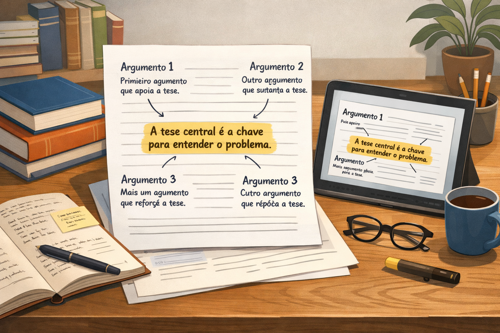

Identificação da Tese e dos Argumentos em Textos Dissertativos: Guia para ENEM e Concursos
A identificação da tese e dos argumentos em textos dissertativos é o coração da leitura crítica e a competência mais cobrada nas provas de Linguagens do ENEM, do PAES UEMA e em concursos públicos. Além de garantir o acerto em questões interpretativas de múltipla escolha, dominar essa arquitetura lógica é o requisito indispensável para produzir redações nota máxima (Competências 2 e 3 da Matriz do ENEM).
Muitos candidatos tropeçam em questões dissertativas porque confundem o assunto do texto com a tese do autor. Dizer que um texto fala sobre "inteligência artificial" é apenas identificar o tema genérico; a tese, por sua vez, é a resposta à pergunta fundamental: "O que o autor pensa criticamente sobre o avanço da inteligência artificial?". Enquanto a tese representa o posicionamento que o autor quer que você aceite, os argumentos são as vigas de sustentação que respondem ao "por que você deve concordar com ele".
Neste guia definitivo, você aprenderá a tríade que separa assunto, tema e tese, dominará os 6 principais tipos de argumentos e suas estratégias persuasivas, reconhecerá como as bancas formulam pegadinhas de interpretação e resolverá nosso quiz avançado com 10 questões comentadas.

1. A Tríade Essencial: Assunto vs. Tema vs. Tese
O primeiro passo para gabaritar questões sobre a estrutura argumentativa é não misturar os três níveis de abstração do texto dissertativo:
Assunto e Tema (O que é discutido / O recorte)
O assunto é a área ampla da realidade (ex.: Meio Ambiente). O tema é a delimitação específica desse assunto para um determinado debate (ex.: Os impactos do descarte inadequado de lixo eletrônico nos centros urbanos brasileiros). O tema é o território onde a discussão ocorre; ele é neutro e não carrega, por si só, um julgamento fechado.
Tese (O posicionamento crítico / A opinião)
É o ponto de vista particular e opinativo que o autor assume diante do tema. É uma afirmação passível de debate, controvérsia e discordância (ex.: "A obsolescência programada da indústria tecnológica aliada à inércia do poder público na reciclagem inviabiliza o desenvolvimento urbano sustentável"). Sem tese, não existe dissertação argumentativa.
O "Teste do Discordo!": Como ter certeza de que você achou a tese?
Para confirmar se uma frase do texto é realmente a tese, faça o teste mental da oposição. Leia a frase e pergunte-se: "Alguém em sã consciência poderia levantar a mão e dizer 'eu discordo totalmente disso'?".
• Se a frase for "O Brasil possui mais de 200 milhões de habitantes", ninguém pode discordar: trata-se de um fato numérico.
• Se a frase for "O crescimento populacional desordenado comprometeu a qualidade da saúde pública", alguém pode perfeitamente contra-argumentar que a culpa é da corrupção ou da gestão de verbas. Logo, é uma tese!
2. Anatomia do Texto Dissertativo: onde moram a tese e os argumentos?
A dissertação segue um padrão composicional clássico. O leitor treinado prevê a localização de cada elemento nas diferentes etapas da leitura:
Esqueleto composicional da argumentação:
- 1. Introdução (Apresentação + Tese explícita): O autor contextualiza o problema (por alusão histórica, dados ou definição) e, obrigatoriamente antes do ponto final do parágrafo, declara sua tese central (geralmente acompanhada de dois tópicos argumentativos que serão desdobrados a seguir).
- 2. Desenvolvimento (A artilharia dos Argumentos): São os parágrafos intermediários (D1 e D2). Cada parágrafo responde ao "Por que penso assim?". Começa com um tópico frasal (ideia-força), apresenta a fundamentação (dados, autoridades, exemplos) e fecha com um desfecho crítico autoral.
- 3. Conclusão (Síntese e Fechamento): Retoma a tese com outras palavras (reafirmação) à luz das evidências apresentadas. No ENEM, traz a Proposta de Intervenção detalhada (com os 5 elementos obrigatórios); nos vestibulares tradicionais e concursos, consolida uma síntese reflexiva ou prescreve soluções institucionais.
3. Tipos de Argumentos e Estratégias Persuasivas
Um autor não convence o leitor apenas afirmando "porque eu acho". Ele recorre a estratégias argumentativas legitimadas. Observe as principais categorias cobradas pelas bancas examinadoras:
| Tipo de Argumento | Como Funciona na Prática | Efeito de Sentido / Força Persuasiva | Exemplo Comentado |
|---|---|---|---|
| Argumento de Autoridade | Cita o pensamento de filósofos, cientistas, sociólogos ou instituições consagradas (OMS, IBGE, UNESCO). | Empresta o prestígio e o saber legitimado de um especialista para dar peso inquestionável à tese. | "Conforme leciona Zygmunt Bauman, a fluidez das relações na modernidade líquida gera isolamento social." |
| Dados Estatísticos (Prova Concreta) | Apresenta porcentagens, pesquisas quantitativas e relatórios empíricos verificáveis. | Transmite rigor técnico e cientificidade, demonstrando que o problema não é mera impressão individual. | "Dados do Ipea revelam que 70% dos egressos do sistema prisional reincidem no crime em até cinco anos." |
| Causa e Consequência (Raciocínio Lógico) | Estabelece a relação causal entre um fato originador e seus desdobramentos nefastos ou benéficos. | Evidencia a engrenagem lógica do problema, provando que determinada consequência decorre necessariamente da causa apontada. | "A omissão estatal no saneamento básico (causa) culmina na sobrecarga crônica dos leitos do SUS (efeito)." |
| Alusão Histórica | Compara o cenário atual com acontecimentos, leis ou períodos do passado (Revolução Industrial, Ditadura Militar). | Demonstra que o problema atual tem raízes históricas profundas ou adverte que erros do passado estão se repetindo. | "Assim como na Revolta da Vacina de 1904, a desinformação digital hodierna sabota o pacto de imunização coletiva." |
| Exemplificação (Fato Típico) | Narra um caso notório, amplamente divulgado pela imprensa, que ilustra a gravidade do tema. | Aproxima a teoria da realidade palpável do leitor, sensibilizando-o por meio de uma situação concreta e dramática. | "O rompimento da barragem em Brumadinho escancarou a negligência corporativa na fiscalização ambiental." |
| Contra-argumentação (Refutação) | Apresenta a tese adversária ("Muitos dizem que...") apenas para desconstruí-la em seguida ("...no entanto, os dados mostram que..."). | Demonstra domínio amplo do debate, neutraliza as defesas do leitor e anula preventivamente as objeções contrárias. | "Embora defensores da medida aleguem redução de custos, pesquisas comprovam que a terceirização precarizou o serviço." |
Desmontagem Prática: Da Tese ao Argumento
"O colapso da mobilidade urbana nas capitais brasileiras não é um acidente geográfico, mas sim o resultado perverso da escolha histórica pelo modelo rodoviarista individual (Tese). Segundo dados da Associação Nacional de Transportes Públicos (ANTP), os automóveis particulares ocupam mais de 80% do espaço viário das cidades, transportando menos de um terço da população (Argumento de Prova Concreta). Dessa disparidade aberrante, decorrem engarrafamentos diários que roubam horas de descanso dos trabalhadores e asfixiam a produtividade econômica nacional (Argumento de Causa e Consequência)."
4. Como Diferenciar a Tese dos Argumentos Secundários
Uma das pegadinhas mais comuns em concursos e vestibulares é colocar um argumento brilhante do texto em uma alternativa para ver se o candidato o confunde com a tese geral.
O Teste do Guarda-Chuva: Hierarquia textual
A Tese é como a copa de um grande guarda-chuva: ela é ampla o suficiente para abrigar sob si todos os parágrafos do texto.
Os Argumentos são as varetas metálicas que sustentam a copa. Cada argumento apoia apenas uma parte da estrutura.
• Se a alternativa trouxer uma frase que explica apenas o segundo parágrafo (ex.: a citação de um filósofo ou um dado sobre mortalidade infantil), ela é um argumento de apoio, e NÃO a tese principal!
• A tese é a proposição mestra que responde ao título e amarra a conclusão do início ao fim.
5. Como Tese e Argumentos caem nas Provas
Foco das bancas avaliadoras:
ENEM: Cobra na prova de Linguagens a identificação da estratégia argumentativa (Habilidade 18 e 19: "Para convencer o leitor, o autor recorre a..."). Na Redação, avalia na Competência 3 o projeto de texto: se os argumentos escolhidos defendem de fato a tese anunciada na introdução de forma coerente e sem contradições.
PAES UEMA e Vestibulares Tradicionais (FUVEST, UNICAMP): Exigem leitura atenta de operadores argumentativos (como "conquanto", "ademais", "outrossim") e cobram a identificação de teses implícitas, ironias e falácias lógicas em editoriais e crônicas reflexivas.
Concursos Públicos (Cebraspe, FGV, FCC): Utilizam o comando clássico: "O argumento que dá sustentação lógica e causal à tese apresentada no primeiro período do texto é..." ou cobram a distinção entre premissas verdadeiras e conclusões falaciosas.
Quiz sobre Identificação da Tese e dos Argumentos
Questões de fixação — Nível Avançado
Questão 1 — (ENEM/Vestibulares) Leia o parágrafo introdutório: "A expansão vertiginosa das plataformas digitais de apostas esportivas tem sido celebrada por setores econômicos como um triunfo do entretenimento moderno. Entretanto, sob a fachada inofensiva do jogo, opera-se uma grave drenagem da renda das famílias de baixa renda, exigindo urgente regulação estatal."
A tese central defendida pelo autor nesse parágrafo é:
Questão 2 — Leia o fragmento argumentativo: "A precarização das relações de trabalho nas entregas por aplicativo não é fruto do acaso. Como adverte o sociólogo Ricardo Antunes, testemunhamos o surgimento do 'infoproletariado', uma massa de trabalhadores desprovida de garantias previdenciárias que assume sozinha todos os riscos da atividade econômica."
A estratégia argumentativa dominante mobilizada pelo autor para sustentar sua visão crítica é:
Questão 3 — (Foco: Concursos Públicos) A principal diferença funcional entre uma tese e um argumento em um texto dissertativo reside no fato de que:
Questão 4 — Leia: "Defensores da exploração mineral irrestrita sustentam que a atividade impulsiona o PIB e gera empregos imediatos. No entanto, relatórios ambientais comprovam que os custos de remediação dos desastres ecológicos e o aniquilamento dos recursos hídricos superam em cinco vezes os lucros auferidos pelas mineradoras no médio prazo."
A técnica de persuasão empregada nesse parágrafo denomina-se:
Questão 5 — (Foco: PAES UEMA) Considere o trecho de um editorial: "Não é admissível que o Maranhão continue tolerando índices inaceitáveis de analfabetismo funcional em suas regiões mais isoladas. O investimento em infraestrutura escolar básica é, portanto, inadiável."
Os vocábulos "não é admissível", "inaceitáveis" e "inadiável" funcionam como:
Questão 6 — Leia o período: "A queima contínua de combustíveis fósseis intensifica o efeito estufa, o que desencadeia ondas de calor extremo e afeta a produção agrícola global."
Nesse fragmento, o argumento fundamenta-se na relação de:
Questão 7 — Em uma questão do ENEM sobre um artigo de opinião científico, o enunciado pede para identificar a "estratégia que assegura a credibilidade dos argumentos do autor". A alternativa correta deve apontar para:
Questão 8 — Leia: "O descaso com a conservação das rodovias brasileiras assemelha-se ao quadro trágico vivenciado na década de 1970, quando a falta de pavimentação isolava cidades inteiras e encarecia o escoamento de alimentos."
O autor recorre à estratégia de:
Questão 9 — Em redações dissertativas avaliadas pelo ENEM, a ausência de uma tese clara na introdução provoca:
Questão 10 — Leia o excerto: "A tragédia das enchentes urbanas não pode ser creditada exclusivamente ao volume pluviométrico. Cidades como Curitiba demonstram que o investimento maciço em parques lineares e bacias de contenção evita inundações mesmo sob chuvas torrenciais."
O recurso ao exemplo da cidade de Curitiba funciona discursivamente como:
Resumo: passo a passo para identificar a tese e os argumentos
- Localize o Assunto e o Tema: Pergunte-se primeiro "Sobre o que o texto está falando?" para identificar o recorte do debate.
- Isole a Tese Central: Busque no primeiro parágrafo a resposta para "Qual é a opinião crítica do autor sobre esse tema?". Aplique o teste do "discordo!".
- Rastreie os Argumentos: Nos parágrafos de desenvolvimento, responda ao "Por que o autor defende isso?", observando os dados, autoridades e exemplos.
- Atenção aos Operadores Lógicos: Conectivos como "portanto", "haja vista", "conquanto", "ademais" revelam a direção dos argumentos.
- Cuidado com o Guarda-Chuva: Não confunda um dado ou exemplo isolado de um parágrafo com a tese que comanda todo o texto.
Conclusão
Saber identificar a tese e os argumentos é a habilidade mestra que separa o leitor passivo daquele verdadeiramente crítico e autônomo. Em exames de alta concorrência como o ENEM, vestibulares estaduais e concursos, a banca examina sua capacidade de enxergar as engrenagens da persuasão: quem compreende como um texto argumentativo é estruturado não se perde em pegadinhas de leitura e adquire o repertório técnico necessário para escrever redações nota máxima com naturalidade e consistência lógica.
Perguntas frequentes sobre Tese e Argumentos
Qual a diferença exata entre Tema e Tese?
O tema é o recorte do assunto proposto para discussão, sendo neutro e factual (ex.: "Caminhos para combater a intolerância religiosa no Brasil"). A tese é a tomada de posição individual do autor sobre esse tema, sendo opinativa e passível de debate (ex.: "A intolerância religiosa persiste no país em virtude da herança colonialista e da ineficácia punitiva das leis vigentes").
A tese precisa aparecer obrigatoriamente no primeiro parágrafo?
Na redação do ENEM e dos vestibulares tradicionais, a recomendação enfática é que a tese esteja explícita na introdução (primeiro parágrafo) para demonstrar projeto de texto estratégico. Em artigos de opinião da imprensa livre, porém, alguns autores recorrem à indução, apresentando fatos ao longo de todo o texto para só revelar a tese no último parágrafo.
Um dado estatístico pode ser considerado uma tese?
Não. Dados estatísticos e numéricos são fatos empíricos verificáveis, portanto funcionam como argumentos de fundamentação (provas concretas). A tese é a interpretação ou o juízo de valor que o autor faz em cima daquele dado (ex.: dizer que o índice é "inaceitável" ou "insuficiente").
O que é uma contra-argumentação e por que ela é tão valorizada nas provas?
A contra-argumentação é a estratégia de citar o ponto de vista dos opositores apenas para refutá-lo com dados e lógica logo em seguida. Ela é altamente valorizada porque prova que o autor conhece a complexidade do debate e possui maturidade intelectual suficiente para antecipar e desmontar as objeções do leitor.
Continue aperfeiçoando sua leitura crítica
- Como identificar a ideia principal de um texto: técnicas para provas
- Inferências na Interpretação Textual: como identificar informações implícitas
- Identificação de Tipos de Texto: narrativo, descritivo, dissertativo, expositivo e injuntivo
- Como interpretar notícias e reportagens: diferenciando fato de opinião
- Como interpretar editoriais e artigos de opinião: estratégias para o ENEM e concursos
Referências
- FIORIN, José Luiz. Argumentação. São Paulo: Contexto.
- KOCH, Ingedore Villaça; ELIAS, Vanda Maria. Escrever e navegar: numa ciranda de palavras. São Paulo: Contexto.
- PERELMAN, Chaïm; OLBRECHTS-TYTECA, Lucie. Tratado da argumentação: a nova retórica. São Paulo: Martins Fontes.
- REBOUL, Olivier. Introdução à retórica. São Paulo: Martins Fontes.
- SAVIOLI, Francisco Platão; FIORIN, José Luiz. Para entender o texto: leitura e redação. São Paulo: Ática.
Explore Outros Conteúdos
Continue seus estudos acessando outras seções do site Mestre Kira: